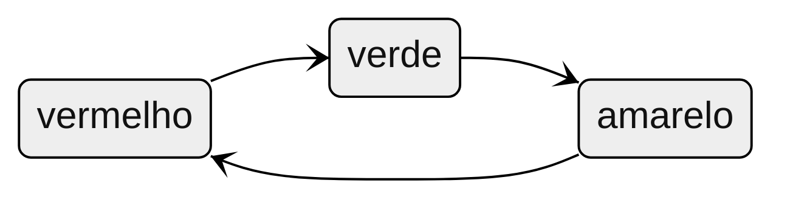
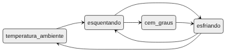

Exercícios para a prova
Estruturas de Kripke
Questão 1
Identifique em quais estruturas de Kripke a seguir tem não-determinismo e justifique sua resposta. a) Semáforos. Considere o conjunto de estados inicial \(I = \{vermelho\}\)

Determinístico (não há não-determinismo), porque existe somente um estado inicial e, para cada um dos três estados, há apenas uma possível transição.
b) Chaleira. Considere o conjunto de estados inicial \(I = \{temperatura\_ambiente\}\)

Não-determinístico (há não-determinismo), porque, para os estados "esquentando" e "esfriando", há mais de uma transição possível.
Questão 2
Defina uma estrutura de Kripke para um sistema de caixa da água com as seguintes características:
- A caixa da água contém uma bóia que impede que ela transborde, ou seja, a bóia interrompe o enchimento quando a caixa está completamente cheia.
- A caixa não enche enquanto está sendo usada, ou seja, ela não pode estar enchendo e esvaziando ao mesmo tempo.
- Se a caixa está vazia, ela não pode ser esvaziada.
- O sistema inicia com a caixa vazia
PS: Tente usar o mínimo de estados e transições necessários para representar esse sistema.
- \(S = \{vazia, enchendo, cheia, esvaziando\}\)
- \(\rightarrow = \{vazia \rightarrow enchendo, enchendo \rightarrow esvaziando, enchendo \rightarrow cheia, cheia \rightarrow esvaziando, esvaziando \rightarrow enchendo, esvaziando \rightarrow vazia\}\)
- \(I = \{vazia\}\)
Lógica temporal
Questão 3
Dada uma fórmula temporal e uma execução, indique se a fórmula é verdadeira ou falsa para a execução. Ou seja, responda verdadeiro se a execução satisfaz a fórmula e falso caso não satisfaça. Considere que \(a\) e \(b\) são proposições.
a) Fórmula: \(X(b)\)
b) Fórmula: \(a -> b\)
c) Fórmula: \(F(a)\)
a) Fórmula: \(X(b)\)
- [V] \([b], [b], [a]\)
- [V] \([a], [b], [a]\)
- [F] \([a], [a], [b]\)
b) Fórmula: \(a -> b\)
- [F] \([a], [a], [a]\)
- [F] \([a], [b], [a]\)
- [V] \([a, b], [a], [a]\)
- [V] \([b], [a], [a]\)
c) Fórmula: \(F(a)\)
- [V] \([a], [a], [a]\)
- [V] \([b], [a], [b]\)
Questão 4
Explique a diferença entre LTL (Lógica Temporal Linear) e CTL (Lógica de árvore computacional - Computational Tree Logic).
A representação de árvore da CTL permite que usemos quantificações existenciais com nossas fórmulas temporais: existe alguma execução onde eventualmente X. Já na LTL, todas as fórmulas são implicitamente universalmente quantificadas, e isso não é possível. Essa diferença faz com que existam fórmulas na LTL que não podem ser espressadas em CTL e fórmulas na CTL que não podem ser espressadas na LTL.
Propriedades e Suposições
Questão 5
Assinale as fórmulas abaixo com [V] (verdadeiro) se a propriedade pode ser espressa com uma invariante ou [F] (falso) caso seja preciso uma fórmua temporal. Lembre-se que não importa se a fórmula é verdadeira ou falsa.
- [F] Para cada compra no cartão de crédito, vem uma cobrança na fatura ao final do mês.
- [V] Nunca vou para a academia sem meus fones de ouvido
- [F] Em algum momento vou terminar de pagar as parcelas do meu apartamento
- [V] Sempre uso óculos para dirigir
- [V] Não é possível estar na aula e no shopping ao mesmo tempo
- [F] Todos os códigos em C++ serão migrados para Rust
Questão 6
Leia a contextualização e responda:
Estou vendendo peças de computador e contrato uma transportadora para fazer as entregas. Essas peças são frágeis, e podem quebrar se não forem transportadas de maneira adequada. A caixa não pode ser virada (a mesma face deve permanecer para cima durante todo o transporte), e não pode se mover no baú do caminhão. Para ter certeza de que a transportadora está fazendo seu serviço corretamente, instalei câmeras internas nos baús dos caminhões que me enviam fotos a cada 5 minutos. Agora, só preciso analisar essas fotos e determinar se a transportadora cumpre os requisitos.
Considerando uma execução dada pela sequência de fotos enviadas, escreva propriedades de segurança e vivacidade que digam sobre a qualidade do serviço da transportadora. Informe o tipo (invariante/temporal e segurança/vivacidade) de cada propriedade. Liste também que tipo de suposições estão sendo feitas para viabilizar essa análise.
Propriedades:
- Invariante de segurança: a face de cima da caixa está para cima
- Temporal de segurança: sempre (a posição da caixa no próximo estado é a mesma que no estado atual ou ela é retirada pra entrega)
- Temporal de vivacidade: eventualmente a caixa é retirada para entrega
Suposições:
- é possível determinar a posição da caixa em cada foto
- é possível determinar se a face correta da caixa está pra cima
- se a caixa for retirada, é por conta de uma entrega
Questão 7
Alice e Bob estavam combinando de se encontrar e Alice mandou a seguinte mensagem para Bob: "Encontre-me as 15h na cafeteria Café Quentinho". Ao fazer essa comunicação, Alice estava supondo algumas coisas. Descreva qual suposição de Alice estava errada para cada um dos cenários a seguir. a) Bob não apareceu. A bateria do celular dele acabou antes que visse a mensagem de Alice. Responda: Alice assumiu que …
Alice assumiu que Bob havia recebido a mensagem dela.
b) Bob foi em outro Café Quentinho - acontece que havia outra cafeteria com esse nome em outro bairro. Responda: Alice assumiu que …
Alice assumiu que havia apenas uma "Café Quentinho" na cidade
c) Quando Alice chegou, o Bob já estava lá por uma hora. Ele havia esquecido de ajustar seu relógio no fim do horário de verão. Responda: Alice assumiu que …
Alice assumiu que o relógio de Bob estava no mesmo horário que o dela.
Perguntas gerais
Questão 8
Suponha que temos um modelo e uma propriedade que é violada numa execução de 5 passos. Considere que estamos usando um simulador aleatório com até 10.000 amostras e 10 passos, e um model checker com até 10 passos. Assinale com verdadeiro ou falso e justifque sua resposta.
- [F] O simulador irá encontar um contraexemplo para propriedades
- [V] O model checker encontrará um contraexemplo de 5 passos
- [F] O model checker demorará mais tempo que o simulador para responder
- [F] O simulador demorará mais tempo que o model checker para responder
- [F] O model checker poderá finalizar a execução sem encontrar o contraexemplo
- [V] O simulador pode encontrar um contraexemplo de 9 passos
TLA+ e Quint
Questão 9
Dada uma especificação simples, escreva uma breve descrição do que ela faz. Observe o seguinte exemplo: Quint:
var x: int
action init = x' = 0
action step = x' = if (x < 10) x + 1 else x
TLA+:
VARIABLE x
Init == x = 0
Next == x' = IF (x < 10) THEN x + 1 ELSE xPoderíamos descrever como: Um modelo onde x começa em zero e é incrementado até chegar a 10, com incrementos de tamanho 1. Ao chegar a 10, x permanece com o mesmo valor pra sempre
Agora, responda com uma descrição para cada especificação abaixo:
Especificação A
Quint:
var x: int
action init = x' = 0
action step = any {
all {
x < 5,
x' = x + 1
},
all {
x > -5,
x' = x - 1
}
}
TLA+
VARIABLE x
Init == x = 0
Next ==
\/ /\ x < 5
/\ x' = x + 1
\/ /\ x > -5
/\ x' = x - 1
Um modelo onde x começa em zero e pode ser incrementado em 1 caso seja menor que 5, ou decrementado em 1 caso seja maior que -5. Ou seja, a cada passo x terá seu valor modificado (mais um ou menos um) e permanecerá sempre entre -5 e 5.
Especificação B
Quint:
var x: int
action init = x' = 1
action step = {
nondet v = 1.to(10).oneOf()
all {
x != v,
x' = v
}
}
TLA+:
VARIABLE x
Init == x = 1
Next == \E v \in 1..10:
/\ x /= v
/\ x' = vUm modelo onde x começa em 1 e a cada passo recebe um novo valor, diferente do atual, entre 1 e 10.
Questão 10
Considere o modelo a seguir:
Quint:
var x: int
action init = x' = 10
action step = any {
all {
x < 20,
x % 2 == 0,
x' = x + 3
},
all {
x > 5,
x' = x - 1
}
}
TLA+:
VARIABLE x
Init == x = 10
Next ==
\/ /\ x < 20
/\ x % 2 = 0
/\ x' = x + 3
\/ /\ x > 5
/\ x' = x - 1Para cada execução a seguir, assinale verdadeiro se o modelo permite a execução e falso caso contrário. Quando responder falso, justifique sua resposta.
- [F]
x: 7, x: 6, x: 9, x: 8- x não pode ser 7 no estado inicial. Deve ser 10.
- [V]
x: 10, x: 13, x: 12, x: 11, x: 10 - [V]
x: 10, x: 9, x: 8, x: 11 - [F]
x: 10, x: 9, x: 12, x: 15- não podemos somar 3 ao 9 para chegar em 12, porque uma das pré-condições para somar 3 é que x seja divisível por 2, e 9 não é.
Questão 11
O operador primed (') permite que
escrevamos predicados sobre o próximo estado. Assinale verdadeiro se o
operador primed está sendo usado corretamente, ou falso se o uso
resultará em um erro. Caso responder falso, justifique sua
resposta. Considere que x e y são variáveis. As respostas para
Quint ou TLA+ são as mesmas, responda apenas uma delas.
Quint:
TLA+:
Quint:
- [F]
all { x' = 1, x' = 2 }- x é atualizado duas vezes na mesma ação
- [V]
any { x' = 1, x' = 2 } - [V]
all { x' = 1, y' = 2 } - [F]
any { x' = 1, y' = 2 }- atualização desbalanceada: em uma das ramificações apenas x é atualizado, e em outra apenas y
TLA+:
- [F]
x' = 1 /\ x' = 2- x é atualizado duas vezes na mesma ação
- [V]
x' = 1 \/ x' = 2 - [V]
x' = 1 /\ y' = 2 - [F]
x' = 1 \/ y' = 2- atualização desbalanceada: em uma das ramificações apenas x é atualizado, e em outra apenas y
Questão 12
Agora escreva a propriedade em Quint ou em TLA+ para:
a) "Não é possível estar na aula e no shopping ao mesmo tempo".
Considere que existam duas variáveis de estado do tipo bool: na_aula e
no_shopping. b) "Sempre uso óculos para
dirigir". Considere que existam duas variáveis de estado do tipo bool: estou_dirigindo e estou_de_oculos. c) "Em algum momento vou
terminar de pagar as parcelas do meu apartamento". Considere que exista
uma variável de estado do tipo int para o
número restante de parcelas: parcelas_restantes. d) [desafio] "Todos os
códigos em C++ serão migrados para Rust". Considere que exista uma
variável codigos do tipo int -> { codigo: str, linguagem: str } sendo
a chave (domínio) um identificador único daquele código e o campo linguagem pode conter "c++", "haskell"
ou "rust".
a) not(na_aula) or not(no_shopping) b)
estou_dirigindo implies estou_de_oculos c)
eventually(parcelas_restantes == 0) d) codigos.keys().forall(k => codigos.get(k).linguagem == "c++" implies eventually(codigos.get(k).linguagem == "rust"))
Questão 13
Considere um simples jogo de maior dado com dois jogadores, em que cada um rola um dado de 6 faces. Se o dado do jogador 1 for maior do que o do jogador 2, o jogador 1 vence e o jogador 2 perde - e vice versa. Se os dados são iguais, eles jogam novamente até desempatar. Responda às seguintes questões:
type Status =
Pendente | Venceu(int)
var dado1: int
var dado2: int
var status: Status
action init = {
nondet d1 = 1.to(6).oneOf()
nondet d2 = 1.to(6).oneOf()
all {
dado1' = d1,
dado2' = d2,
status' = (???)
}
}
action step = {
if (status == Pendente) {
init
} else {
all {
dado1' = dado1,
dado2' = dado2,
status' = status,
}
}
}
EXTENDS Integers, FiniteSets
VARIABLES dado1, dado2, status
Init ==
\E d1 \in 1..6:
\E d2 \in 1..6:
/\ dado1 = d1
/\ dado2 = d2
/\ status = (???)
Next ==
IF (status = "pendente") THEN
\E d1 \in 1..6:
\E d2 \in 1..6:
/\ dado1' = d1
/\ dado2' = d2
/\ status' = (???)
ELSE
/\ dado1' = dado1
/\ dado2' = dado2
/\ status' = statusa) Escreva a expressão que deveria estar em (???). PS: Em TLA+, ele aparece duas vezes, mas
a expressão em ambos os casos é a mesma.
Quint: if (d1 > d2) Venceu(1) else if (d2 > d1) Venceu(2) else Pendente
ou TLA+: IF d1 > d1 THEN "1 venceu" ELSE IF d2 > d1 THEN "2 venceu" ELSE "pendente"
b) Escreva uma invariante para "O jogador 1 não perde". Essa invariante é satisfeita nesse modelo? Justifique.
dado1 >= dado2 ou
status != Venceu(2)
(Quint) / status # "2 venceu" (TLA+)
c) Escreva outras duas invariantes quaisquer sobre as variáveis desse modelo. Uma delas deve ser satisfeita nesse modelo, e outra não. Indique qual é satisfeita e qual não é.
Satisfeita: dado1 + dado2 < 20 Insatisfeita: dado1 > 2
d) Escreva uma propriedade temporal de vivacidade para esse jogo. Ela deve ser satisfeita. Considere que razoabilidade já foi devidamente assumida.
eventually(dado1 != dado2) / <>(dado1 # dado2)
e) Esse modelo se classifica como uma estrutura de Kripke? Justifique.
Sim, pois cada estado tem ao menos uma possível transição (a relação de transição é total).
Questão 14
Observe as epecificações a seguir e responda às perguntas.
var x: int
action init = {
nondet v = Set(1, 5).oneOf()
x' = v
}
action step = any {
all {
x == 5,
x' = 4,
},
all {
x < 3,
x' = 2,
},
all {
x < 5,
x' = x,
}
}
VARIABLE x
Init == x \in {1, 5}
Next ==
\/ /\ x = 5
/\ x' = 4
\/ /\ x < 3
/\ x' = 2
\/ /\ x < 5
/\ x' = xa) Defina uma estrutura de Kripke para esse modelo. Todos os estados da estrutura devem ser alcançáveis.
(S, ->, I) tal que:
S = {1, 2, 4, 5}
-> = {1 -> 1, 1 -> 2, 2 -> 2, 4 -> 4, 5 -> 4}
I = {1, 5}
b) Essa estrutura de Kripke é determinística ou não-determinística? Justifique sua resposta para cada estado/regra.
Não-determinística, pois \(Post(1) = \{1, 2\}\) e \(|I| = 2\)
c) Essa estrutura de Kripke é finita? Justifique sua resposta.
Finita, porque o número de estados é finito.
d) Quais são os estados terminais dessa estrutura de Kripke?
2 e 4
e) Qual a pré-condição da ação de próximo estado (step em Quint ou Next em TLA+)?
x <= 5
f) Modifique o modelo (Quint ou TLA+) para que haja transições do
estado onde x é 2 para todos os estados da estrutura de
Kripke.
Quint:
action step = any {
...,
all {
x == 2,
nondet v = Set(1, 2, 4, 5).oneOf()
x' = v
}
}
TLA+:
Next ==
\/ ...
\/ /\ x == 2
/\ \E v \in {1, 2, 4, 5} : x' = v